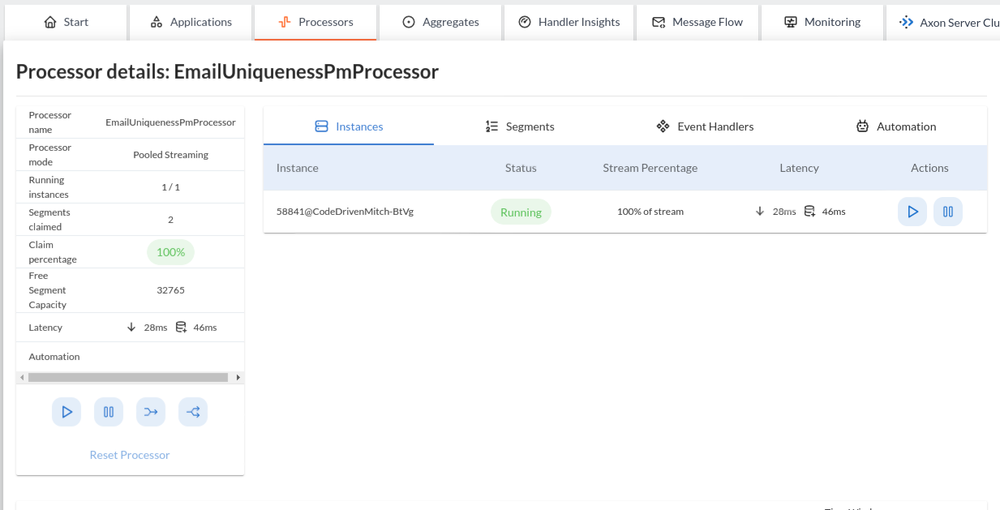
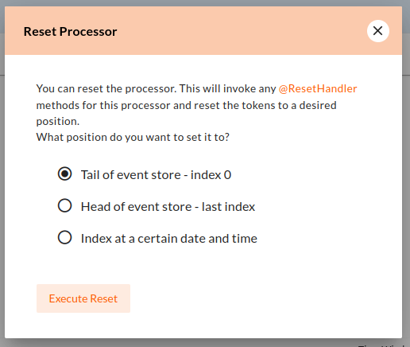
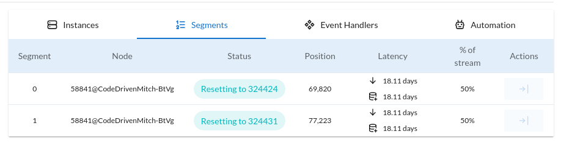

Streaming Event Processor
The StreamingEventProcessor, or Streaming Processor for short, is a type of Event Processor.
As any Event Processor, it serves as the technical aspect to handle events by invoking the event handlers written in an Axon application.
The Streaming Processor defines itself by receiving the events from a StreamableEventSource.
The StreamableEventSource is an infrastructure component through which we can open a stream of events.
The source can also specify positions on the event stream, so-called Tracking Tokens, used as start positions when opening an event stream.
An example of a StreamableEventSource is the EventStore, like for example Axon Server or the JPA aggregate-based storage engine.
Furthermore, Streaming Processors use separate threads to process the events retrieved from the StreamableEventSource.
Using separate threads decouples the StreamingEventProcessor from other operations (for example, event publication or command handling), allowing for cleaner separation within any application.
Using separate threads allows for parallelization of the event load, either within a single JVM or between several.
When starting a Streaming Processor, it will open an event stream through the configured StreamableEventSource.
The first time a stream has started, it, by default, will begin at the first position (the oldest token) of the stream.
It keeps track of the event processing progress while traversing the stream.
It does so by storing the Tracking Tokens, or tokens for short, accompanying the events.
This solution works towards tracking the progress since the tokens specify the event’s position on the stream.
|
First or latest?
The first, or oldest, token is located at the beginning of the stream, and the newest, or latest, token is positioned at the tip of the stream. |
Maintaining the progress through tokens makes a Streaming Processor
-
able to deal with stopping and starting the processor,
-
more resilient against unintended shutdowns, and
-
the token provides a means to replay events by adjusting the position of tokens.
All combined, the Streaming Processor allows for decoupling, parallelization, resiliency, and replay-ability. It is these features that make the Streaming Processor the logical choice for the majority of applications. Due to this, the "Pooled Streaming Event Processor," a type of Streaming Processor, is the default Event Processor.
|
Default Event Processor
Which If the application only has an Event Bus configured, the framework will lack a |
The Pooled Streaming Event Processor (PSEP for short) is the recommended processor implementation for most users. It provides a high-performance, two-pool architecture that separates event fetching from event processing, enabling efficient parallel processing and better resource utilization.
The processor supports all core streaming operations including replaying events, parallelism, and tracking progress with tokens.
Configuring
The Pooled Streaming Event Processor has several additional components that you can configure, next to the base options. For other features that are configurable, we refer to their respective sections for more details. This section covers how to configure the basics of a Pooled Streaming Event Processor.
To configure a Pooled Streaming Event Processor you have roughly three approaches:
-
Autodetected configuration, like Spring
-
EventProcessorDefinitionconfiguration, like Spring
Both solutions have examples drafted below, showing how to configure the "example-processor" with a specific event source.
Declarative configuration
When using Axon’s configuration API, you should invoke the MessagingConfigurer#eventProcessing(Consumer<EventProcessingConfigurer>) operation.
The EventProcessingConfigurer lambda guides users towards:
-
First, selecting the Event Processor type,
-
second, register a lambda to retrieve the Event Handling Components, and,
-
third, customization for the event processor, if any.
The example below shows how this approach is used to define a (1) PooledStreamingEventProcessor with the (2) AnnotatedEventHandlingClass as the single event handling component, and (3) with a specific customization:
import org.axonframework.messaging.core.configuration.MessagingConfigurer;
import org.axonframework.messaging.eventhandling.configuration.EventHandlingComponentsConfigurer;
import org.axonframework.messaging.eventhandling.processing.streaming.pooled.PooledStreamingEventProcessorsConfigurer;
public class AxonConfig {
public void configureEventProcessing(MessagingConfigurer configurer) {
configurer.eventProcessing(eventConfigurer -> eventConfigurer.pooledStreaming(
this::configurePooledStreamingProcessor
));
}
private PooledStreamingEventProcessorsConfigurer configurePooledStreamingProcessor(
PooledStreamingEventProcessorsConfigurer pooledStreamingConfigurer
) {
return pooledStreamingConfigurer.processor(
"example-processor",
config -> config.eventHandlingComponents(this::configureHandlingComponent)
.notCustomized()
);
}
private EventHandlingComponentsConfigurer.AdditionalComponentPhase configureHandlingComponent(
EventHandlingComponentsConfigurer.RequiredComponentPhase componentConfigurer
) {
return componentConfigurer.autodetected("example-component", c -> new AnnotatedEventHandlingClass());
}
}The example above shows how to configure "example-processor" as a Pooled Streaming Event Processor.
When no customization is required, the customized method can be replaced by the notCustomized() operation.
If you prefer to define defaults for all Pooled Streaming Processors, you can use the defaults(…) instead of customized(…).
This does not limit to possibility to override defaults, as is shown below:
import org.axonframework.messaging.core.configuration.MessagingConfigurer;
import org.axonframework.messaging.eventhandling.configuration.EventHandlingComponentsConfigurer;
import org.axonframework.messaging.eventhandling.processing.streaming.pooled.PooledStreamingEventProcessorsConfigurer;
import org.axonframework.messaging.eventstreaming.StreamableEventSource;
import java.time.Duration;
public class AxonConfig {
public void configureEventProcessing(MessagingConfigurer configurer) {
configurer.eventProcessing(eventConfigurer -> eventConfigurer.pooledStreaming(
this::configurePooledStreamingProcessor
));
}
private PooledStreamingEventProcessorsConfigurer configurePooledStreamingProcessor(
PooledStreamingEventProcessorsConfigurer pooledStreamingConfigurer
) {
return pooledStreamingConfigurer
// Set defaults for all pooled streaming processors
.defaults((config, processorConfig) -> processorConfig
.eventSource(config.getComponent(StreamableEventSource.class))
.initialSegmentCount(4)
.batchSize(100)
.claimExtensionThreshold(Duration.ofSeconds(5).toMillis())
)
// Configure a specific processor
.processor(
"example-processor",
config -> config.eventHandlingComponents(this::configureHandlingComponent)
.customized((c, pooledStreamingConfig) -> pooledStreamingConfig
.initialSegmentCount(8) // Override default for this processor
)
);
}
private EventHandlingComponentsConfigurer.AdditionalComponentPhase configureHandlingComponent(
EventHandlingComponentsConfigurer.RequiredComponentPhase componentConfigurer
) {
return componentConfigurer.autodetected("example-component", c -> new AnnotatedEventHandlingClass());
}
}Autodetected configuration - Spring Boot properties file
A properties file allows the configuration of several fields for the Pooled Streaming Event Processor. If more flexibility is required, like concretely defining the event handling components to attach, we recommend use of the declarative configuration instead.
axon.eventhandling.processors.example-processor.mode=pooled-streaming
axon.eventhandling.processors.example-processor.source=eventStore
axon.eventhandling.processors.example-processor.initial-segment-count=4
axon.eventhandling.processors.example-processor.batch-size=100If the name of an event processor contains periods ., use the map notation:
axon.eventhandling.processors[example.processor].mode=pooled-streaming
axon.eventhandling.processors[example.processor].source=eventStoreAutodetected configuration - EventProcessorDefinition based configuration
For programmatic, type-safe configuration of event processors, Spring Boot users can define EventProcessorDefinition beans.
This approach provides several advantages:
-
Compile-time validation of configuration
-
Fine-grained handler assignment control
-
Full access to processor configuration options
-
Better IDE support with autocompletion
import org.axonframework.extension.spring.config.EventHandlerSelector;
import org.axonframework.extension.spring.config.EventProcessorDefinition;
import org.springframework.context.annotation.Bean;
import org.springframework.context.annotation.Configuration;
@Configuration
public class EventProcessorConfig {
@Bean
public EventProcessorDefinition exampleProcessorDefinition() {
return EventProcessorDefinition.pooledStreaming("example-processor")
.assigningHandlers(EventHandlerSelector.matchesNamespaceOnType(
"orders"
))
.customized(config -> config
.initialSegmentCount(4)
.batchSize(100)
.claimExtensionThreshold(5000)
.tokenClaimInterval(5000)
);
}
}The assigningHandlers method uses the EventHandlerSelector to receive an EventHandlerDescriptor that provides access to:
-
beanName()- The Spring bean name -
beanType()- The event handler class -
beanDefinition()- The Spring bean definition -
component()- The component builder
This allows flexible handler selection based on naming conventions, packages, types, or other criteria.
In the example above, we use the convenience EventHandlerSelector#matchesNamespaceOnType method that assigns handlers that are annotated with @Namespace("orders") to an PooledStreamingEventProcessor with the name "example-processor".
Event Handlers can describe their @Namespace on several levels, as described here.
When the Event Processor name and namespace are identical, you can use the EventProcessorDefinition.pooledStreamingMatching() to skip the assigningHandlers method automatically:
import org.axonframework.extension.spring.config.EventProcessorDefinition;
import org.springframework.context.annotation.Bean;
import org.springframework.context.annotation.Configuration;
@Configuration
public class EventProcessorConfig {
@Bean
public EventProcessorDefinition exampleProcessorDefinition() {
return EventProcessorDefinition.pooledStreamingMatching("orders")
.customized(config -> config
.initialSegmentCount(4)
.batchSize(100)
.claimExtensionThreshold(5000)
.tokenClaimInterval(5000)
);
}
}Use notCustomized() instead of customized() when you don’t need custom processor settings but still want explicit handler assignment:
import org.axonframework.extension.spring.config.EventProcessorDefinition;
import org.springframework.context.annotation.Bean;
import org.springframework.context.annotation.Configuration;
@Configuration
public class EventProcessorConfig {
@Bean
public EventProcessorDefinition exampleProcessorDefinition() {
return EventProcessorDefinition.pooledStreamingMatching("orders")
.notCustomized();
}
}|
Configuration precedence and handler assignment When using multiple configuration approaches:
To avoid conflicts, ensure each handler is matched by at most one |
Processor lifecycle
The PooledStreamingEventProcessor follows the common Event Processor lifecycle contract, with one important addition: start() performs initialization work before event processing can begin.
|
In most scenarios, you do not need to invoke |
What start() does
When start() is called, the processor performs the following steps in sequence before its returned CompletableFuture<Void> completes:
-
Resolves the token store identifier from the configured
TokenStore. -
Starts the internal
Coordinator, which opens the event stream and begins claiming segments.
Because start() is fully asynchronous, callers should await the returned future before interacting with any processor state that depends on a running processor:
import org.axonframework.common.configuration.AxonConfiguration;
import org.axonframework.messaging.eventhandling.processing.streaming.StreamingEventProcessor;
public class ProcessorService {
private final AxonConfiguration configuration;
public ProcessorService(AxonConfiguration configuration) {
this.configuration = configuration;
}
public void startAndQueryIdentifier(String processorName) {
StreamingEventProcessor processor =
configuration.getComponent(StreamingEventProcessor.class, processorName);
processor.start()
.thenRun(() -> {
String identifier = processor.getTokenStoreIdentifier();
System.out.println("Token store identifier: " + identifier);
});
}
}Error mode
Whenever the error handler rethrows an exception, the PooledStreamingEventProcessor aborts the failed processing segment.
The processor will retry processing using an incremental back-off period, starting at 1 second and doubling after each attempt until it reaches the maximum wait time of 60 seconds per attempt.
Due to the two-pool threading architecture, the failed segment is likely to be picked up quickly by another thread within the same JVM. The back-off mechanism applies within the local JVM instance only.
In a distributed environment with multiple PSEP instances, other instances will ignore the back-off and may immediately claim and process the failed segment, providing faster recovery from transient errors.
|
What an aborted segment costs
A segment is not a single sequence. It is a bucket holding many unrelated sequences that share one tracking token and are processed as one ordered stream. When a segment aborts, its token does not advance. On retry, the segment resumes from the last committed position and meets the same event again. Until that event can be processed, every sequence assigned to that segment waits behind it, however unrelated it is to the failure. Segments fail independently, so the remaining segments keep processing. The visible effect is therefore partial degradation rather than a full stop: the sequences that stall are the ones that happen to hash into the affected segment, while the rest continue as normal. |
Common causes of a stalled segment
Any condition that prevents a segment from committing its batch produces the same symptom: that segment stops advancing while others continue. The most common causes are:
-
An event handler that keeps failing. The default
PropagatingErrorHandlerrethrows, so the segment retries the same event indefinitely. This is the intended behaviour when silently skipping the event would corrupt a read model, but it stalls the segment for as long as the cause persists. -
A transaction-breaking database exception. Handler work and the token update share one transaction. An exception that invalidates that transaction, such as a value exceeding a column’s size, rolls back the batch including the token update, so the segment retries from the same position.
-
An unreachable token store. A segment needs to extend its claim to keep processing. If the token store is unavailable or its connection pool is exhausted, the segment cannot commit progress and releases its claim.
-
A handler that is slow rather than failing. Events within a segment are processed in order, so one slow handler delays every sequence behind it. Nothing is in error, but the lag is indistinguishable from a stall when viewed from the outside.
-
Claim contention between nodes. When processing regularly takes longer than the claim timeout, other nodes steal the claim mid-batch, and segments can spend more time changing hands than processing.
-
An overflowing dead-letter queue. Once the queue reaches its capacity, a failing event can no longer be parked, and the failure propagates to the processor as though no queue were configured. See Capacity and overflow.
Limiting the impact
The blast radius of a stall is a design choice, not a fixed property of the processor:
-
Choose the segment count deliberately. A stalled segment holds back roughly
1/segmentCountof your sequences. Raising the segment count shrinks the share of data affected by any single stall, at the cost of more tokens to claim and maintain. -
Separate failure domains across processors. Event handling components assigned to the same processor stall together, because they share segments and tokens. Placing a component that depends on a fragile downstream system in its own processor keeps its failures away from the rest.
-
Make handlers idempotent. Retries after an aborted batch replay events the handler may already have seen. Idempotent handlers make those retries harmless, and are a precondition for most other recovery options.
-
Monitor progress per segment, not per processor. An aggregate lag figure hides a single stalled segment among healthy ones for a long time. Alerting on the slowest segment surfaces the condition while it still affects a small share of the data.
-
Park failing events instead of retrying them. A dead-letter queue moves a failing sequence aside so the segment keeps processing everything else. Note that this holds only while the queue has capacity.
Tracking tokens
A vital attribute of the Streaming Event Processor is its capability to keep and maintain the processing progress.
It does so through the TrackingToken, the "token" for short.
Such a token accompanies each message a streaming processor receives through its event stream.
It’s this token that:
-
specifies the position of the event on the overall stream, and
-
is used by the Streaming Processor to open the event stream at the desired position on start-up.
Using tokens gives the Streaming Event Processor several benefits, like:
-
Being able to reopen the stream at any later point, picking up where it left off with the last event.
-
Dealing with unintended shutdowns without losing track of the last events they’ve handled.
-
Collaboration over the event handling load from two perspectives. First, the tokens make sure only a single thread is actively processing specific events. Secondly, it allows parallelization of the load over several threads or nodes of a Streaming Processor.
-
Replaying events by adjusting the token position of that processor.
To be able to reopen the stream at a later point, we should keep the progress somewhere.
The progress is kept by updating and saving the TrackingToken after handling batches of events.
Keeping the progress requires CRUD operation, for which the Streaming Processor uses the TokenStore.
For a Streaming Processor to process any events, it needs "a claim" on a TrackingToken.
The processor will update this claim every time it has finished handling a batch of events.
This so-called "claim extension" is, just as updating and saving of tokens, delegated to the Token Store.
Hence, the Streaming Processors achieves collaboration among instances/threads through token claims.
In the absence of a claim, a processor will actively try to retrieve one. If a token claim is not extended for a configurable amount of time, other processor threads can "steal" the claim. Token stealing can, for example, happen if event processing is slow or encountered some exceptions.
|
Easy TrackingToken access
When processing an event, it may be beneficial to retrieve the token belonging to that event.
First, this can be achieved by adding a parameter of type Additionally, you can retrieve the token from the resources collection of the Processing Context.
To that end, the |
Initial tracking token
The Streaming Processor uses a StreamableEventSource to retrieve a stream of events that will open on start-up.
It requires a TrackingToken to open this stream, which it will fetch from the TokenStore.
However, if a Streaming Processor starts for the first time, there is no TrackingToken present to open the stream with yet.
Whenever this situation occurs, a Streaming Processor will construct an "initial token." By default, the initial token will start at the first position of the event stream. Thus, the processor will begin at the start and handle every event present in the event source. This start position is configurable, as is described here.
These events are handled as regular events, not as a replay.
A processor starting for the first time has no previously built state to correct, so its first pass over the stream is a first pass rather than a repetition of one.
Handlers therefore observe ReplayStatus.REGULAR throughout, handlers that opt out of replaying still handle this initial stream, and no replay-concluded notification is published.
If you do want this initial catch-up flagged as a replay, for example because your handlers suppress side effects while replaying, configure the initial token to conclude its replay at the latest position instead, as shown in the migration guide.
Conceptually, there are a couple of scenarios when a processor builds an initial token on application startup. The obvious one is already shared, namely when a processor starts for the first time. There are, however, also other situations when a token is built that might be unexpected, like:
-
The
TokenStorehas (accidentally) been cleared between application runs, thus losing the stored tokens. -
The application running the processor starts in a new environment (for example, test or acceptance) for the first time.
-
An
InMemoryTokenStorewas used, and hence the processor could never persist the token to begin with. -
The application is (accidentally) pointing to another storage solution than expected.
Whenever a Streaming Processor’s event handlers show unexpected behavior in the form of missed or reprocessed events, a new initial token might have been triggered. In those cases, we recommend to validate if any of the above situations occurred.
Token configuration
There are a couple of things we can configure when it comes to tokens. We can separate these options in "initial token" and "token claim" configuration, as described in the following sections:
Initial token
The initial token for a StreamingEventProcessor is configurable for every processor instance.
When configuring the initial token builder function, the received input parameter is the StreamableEventSource.
The event source provides methods to build a token:
-
firstToken(): Creates a token at the first position of the source. -
latestToken(): Creates a token at the latest position of the source. -
tokenAt(Instant): Creates a token at a specific point in time. If there is an event precisely at that given moment, it will also be included.
Of course, you can completely disregard the StreamableEventSource input parameter and create a token by yourself.
This will, for example, allow you to use predefined token positions like:
- TrackingToken.FIRST: Start from the beginning of the stream.
- TrackingToken.LATEST: Start from the latest position, processing only new events.
The configuration function receives a TrackingTokenSource which provides methods to create tokens at different positions:
-
firstToken()- Start from the beginning of the event stream -
latestToken()- Start from the latest position (skip historical events) -
tokenAt(Instant)- Start from a specific point in time
These functions may require a ProcessingContext parameter. It is safe to pass null if no ProcessingContext is available.
Consider the following snippets if you want to configure a different initial token:
-
Configuration API
-
Spring Boot
import org.axonframework.messaging.core.configuration.MessagingConfigurer;
import org.axonframework.messaging.eventhandling.configuration.EventHandlingComponentsConfigurer;
import org.axonframework.messaging.eventhandling.processing.streaming.pooled.PooledStreamingEventProcessorsConfigurer;
public class AxonConfig {
public void configureEventProcessing(MessagingConfigurer configurer) {
configurer.eventProcessing(eventConfigurer -> eventConfigurer.pooledStreaming(
this::configureInitialToken
));
}
private PooledStreamingEventProcessorsConfigurer configureInitialToken(
PooledStreamingEventProcessorsConfigurer pooledStreamingConfigurer
) {
return pooledStreamingConfigurer.processor(
"example-processor",
config -> config.eventHandlingComponents(this::configureHandlingComponent)
.customized((c, pooledStreamingConfig) -> pooledStreamingConfig.initialToken(
source -> source.firstToken(null)
))
);
}
private EventHandlingComponentsConfigurer.AdditionalComponentPhase configureHandlingComponent(
EventHandlingComponentsConfigurer.RequiredComponentPhase componentConfigurer
) {
return componentConfigurer.autodetected("example-component", c -> new AnnotatedEventHandlingClass());
}
}When using EventProcessorDefinition, the initial token can be configured through the initialToken() method:
import org.axonframework.extension.spring.config.EventProcessorDefinition;
import org.springframework.context.annotation.Bean;
import org.springframework.context.annotation.Configuration;
@Configuration
public class EventProcessorConfig {
@Bean
public EventProcessorDefinition exampleProcessorDefinition() {
return EventProcessorDefinition.pooledStreaming("example-processor")
.assigningHandlers(descriptor ->
descriptor.beanType().getPackageName()
.equals("com.example.eventhandlers"))
.customized(config -> config
.initialToken(source -> source.latestToken(null)));
}
}|
The initial token is only used when the processor starts for the first time. If tracking tokens already exist for the processor, this configuration has no effect. |
Token claims
As described here, a streaming processor should claim a token before it is allowed to perform any processing work. There are several scenarios where a processor may keep the claim for too long. This can occur when, for example, the event handling process is slow or encountered an exception.
In those scenarios, another processor can steal a token claim to proceed with processing. There are a couple of configurable values that influence this process:
-
tokenClaimInterval: Defines how long to wait between attempts to claim a segment. A processor uses this value to steal token claims from other processor threads. This value defaults to 5000 milliseconds. -
claimExtensionThreshold: Threshold to extend the claim in the absence of events. The value defaults to 5000 milliseconds.
Consider the following snippet if you want to configure these values:
-
Configuration API
-
Spring Boot
import org.axonframework.messaging.core.configuration.MessagingConfigurer;
import org.axonframework.messaging.eventhandling.configuration.EventHandlingComponentsConfigurer;
import org.axonframework.messaging.eventhandling.processing.streaming.pooled.PooledStreamingEventProcessorsConfigurer;
public class AxonConfig {
public void configureEventProcessing(MessagingConfigurer configurer) {
configurer.eventProcessing(eventConfigurer -> eventConfigurer.pooledStreaming(
this::configureTokenClaims
));
}
private PooledStreamingEventProcessorsConfigurer configureTokenClaims(
PooledStreamingEventProcessorsConfigurer pooledStreamingConfigurer
) {
return pooledStreamingConfigurer.processor(
"example-processor",
config -> config.eventHandlingComponents(this::configureHandlingComponent).customized(
(c, pooledStreamingConfig) -> pooledStreamingConfig.claimExtensionThreshold(2500)
.tokenClaimInterval(7500)
)
);
}
private EventHandlingComponentsConfigurer.AdditionalComponentPhase configureHandlingComponent(
EventHandlingComponentsConfigurer.RequiredComponentPhase componentConfigurer
) {
return componentConfigurer.autodetected("example-component", c -> new AnnotatedEventHandlingClass());
}
}When using EventProcessorDefinition, configure token claim settings through the configuration methods:
import org.axonframework.extension.spring.config.EventProcessorDefinition;
import org.springframework.context.annotation.Bean;
import org.springframework.context.annotation.Configuration;
@Configuration
public class EventProcessorConfig {
@Bean
public EventProcessorDefinition exampleProcessorDefinition() {
return EventProcessorDefinition.pooledStreaming("example-processor")
.assigningHandlers(descriptor ->
descriptor.beanName().startsWith("example"))
.customized(config -> config
.claimExtensionThreshold(2500)
.tokenClaimInterval(7500));
}
}Token stealing
As described at the start, streaming processor threads can "steal" tokens from one another.
A token is "stolen" when a thread loses a token claim.
Situations like this internally result in an UnableToClaimTokenException, caught by both streaming event processor implementations and translated into warn- or info-level log statements.
Where the framework uses token claims to ensure that a single thread is processing a sequence of events, it supports token stealing to guarantee event processing is not blocked forever. In short, the framework uses token stealing to unblock your streaming processor threads when processing takes too long. Examples may include literal slow processing, blocking exceptional scenarios, and deadlocks.
However, token stealing may occur as a surprise for some applications, making it an unwanted side effect. As such, it is good to be aware of why tokens get stolen (as described above), but also when this happens and what the consequences are.
When is a token stolen?
In practical terms, a token is stolen whenever the claim timeout is exceeded.
This timeout is met whenever the token’s timestamp (for example, the timestamp column of your token_entry table) exceeds the claimTimeout of the TokenStore.
By default, the claimTimeout value equals 10 seconds.
To adjust it, you must configure a TokenStore instance through its builder, as shown in the Token Store section.
If you use Spring Boot, you can alternatively set the axon.eventhandling.tokenstore.claim-timeout for example to 30s to increase it to 30 seconds.
The token’s timestamp is equally crucial in deciding when the timeout is met.
The streaming processor thread holding the claim is in charge of updating the token timestamp.
This timestamp is updated whenever the thread finishes a batch of events or whenever the processor extends the claim based on the configured claimExtensionThreshold.
You should check out the token claim section if you want to know how to configure these values.
To further clarify, a streaming processor’s thread needs to be able to update the token claim and, by extension, the timestamp to ensure it won’t get stolen. Hence, a staling processor thread will, one way or another, eventually lose the claim.
Examples of when a thread may get its token stolen are:
-
Overall slow event handling.
-
Too large event batch size.
-
Blocking operations inside event handlers.
-
Blocking exceptions inside event handlers.
What are the consequences of token stealing?
The consequence of token stealing is that an event may be handled twice (or more).
When a thread steals a token, the original thread was already processing events from the token’s position. To protect against doubling event handling, Axon Framework will combine committing the event handling task with updating the token. As the token claim is required to update the token, the original thread will fail the update. Following this, a rollback occurs on the processing context, resolving most issues arising from token stealing.
The ability to rollback event handling tasks sheds light on the consequences of token stealing. Most event processors project events into a projection stored within a database. Furthermore, if you store the projection in the same database as the token, the rollback will ensure the change is not persisted. Thus, the consequence of token stealing is limited to wasting processor cycles. This scenario is why we recommend storing tokens and projections in the same database.
If a rollback is out of the question for an event handling task, we strongly recommend making the task idempotent.
You may have this scenario when, for example, the projection and tokens do not reside in the same database.
Or, when the event handler dispatches an operation (for example, through the CommandGateway).
In making the invoked operation idempotent, you ensure that whenever the thread stealing a token handles an event twice (or more), the outcome will be identical.
Without idempotency, the consequences of token stealing can be many fold: - Your projection (stored in a different database than your tokens!) may incorrectly project the state. - An event handler putting messages on a queue will put a message on the queue again. - A automation supporting Event Handler invoking a third-party service will invoke that service again. - An event handler sending an email will send that email again.
In short, any operation introducing a side effect that isn’t handled in an idempotent fashion will occur again when a token is stolen.
Concluding, we can separate the consequence of token stealing into roughly three scenarios:
-
We can roll back the operation. In this case, the only consequence is wasted processor cycles.
-
The operation is idempotent. In this case, the only consequence is wasted processor cycles.
-
When the task cannot be rolled back nor performed in an idempotent fashion, compensating actions are the way out.
Token store
The TokenStore provides asynchronous CRUD-styled operations for the StreamingEventProcessor to interact with TrackingTokens.
The streaming processor will use the store to construct, fetch, and claim tokens.
When no token store is explicitly defined, an InMemoryTokenStore is used.
The InMemoryTokenStore is not recommended in most production scenarios since it cannot maintain the progress through application shutdowns.
Unintentionally using the InMemoryTokenStore counts towards one of the unexpected scenarios where the framework creates an initial token on each application start-up.
The framework provides a couple of TokenStore implementations:
-
InMemoryTokenStore- ATokenStoreimplementation that keeps the tokens in memory. This implementation does not suffice as a production-ready store in most applications. -
JpaTokenStore- ATokenStoreimplementation using JPA to store the tokens with. Expects that a table is constructed based on theTokenEntryJPA entity. It is easily auto-configurable with, for example, Spring Boot. -
JdbcTokenStore- ATokenStoreimplementation using JDBC to store the tokens with. Expects that the schema is constructed through theJdbcTokenStore#createSchema(TokenTableFactory)method. SeveralTokenTableFactoryimplementations can be chosen here, like theGenericTokenTableFactory,PostgresTokenTableFactoryorOracle11TokenTableFactoryimplementation.
|
Keep your tokens close
Where possible, we recommend using a token store that stores tokens in the same database as to where the event handlers update the view models. This way, changes to the view model can be stored atomically with the changed tokens. Furthermore, it guarantees exactly once processing semantics. |
|
Storing tokens in PostgreSQL
When you are using PostgreSQL to store your tracking tokens, we strongly recommend you read our known issues section on PostgreSQL and Large Object storage to ensure you do not hit any production issue with this combination. |
Note that you can configure the token store to use for a streaming processor in the EventProcessingConfigurer:
-
Configuration API
-
Spring Boot
To configure a TokenStore for all processors:
import org.axonframework.messaging.core.configuration.MessagingConfigurer;
import org.axonframework.messaging.eventhandling.configuration.EventHandlingComponentsConfigurer;
import org.axonframework.messaging.eventhandling.processing.streaming.pooled.PooledStreamingEventProcessorsConfigurer;
import org.axonframework.messaging.eventhandling.processing.streaming.token.store.TokenStore;
public class AxonConfig {
public void configureEventProcessing(MessagingConfigurer configurer) {
configurer.eventProcessing(eventConfigurer -> eventConfigurer.pooledStreaming(
this::configurePooledStreamingProcessor
));
}
private PooledStreamingEventProcessorsConfigurer configurePooledStreamingProcessor(
PooledStreamingEventProcessorsConfigurer pooledStreamingConfigurer
) {
return pooledStreamingConfigurer.processor(
"example-processor",
config -> config.eventHandlingComponents(this::configureHandlingComponent)
.notCustomized()
).defaults((config, psepConfig) -> psepConfig.tokenStore(
config.getComponent(TokenStore.class)
));
}
private EventHandlingComponentsConfigurer.AdditionalComponentPhase configureHandlingComponent(
EventHandlingComponentsConfigurer.RequiredComponentPhase componentConfigurer
) {
return componentConfigurer.autodetected("example-component", c -> new AnnotatedEventHandlingClass());
}
}Alternatively, to configure a TokenStore for a specific processor, use:
import org.axonframework.messaging.core.configuration.MessagingConfigurer;
import org.axonframework.messaging.eventhandling.configuration.EventHandlingComponentsConfigurer;
import org.axonframework.messaging.eventhandling.processing.streaming.pooled.PooledStreamingEventProcessorsConfigurer;
import org.axonframework.messaging.eventhandling.processing.streaming.token.store.TokenStore;
public class AxonConfig {
public void configureEventProcessing(MessagingConfigurer configurer) {
configurer.eventProcessing(eventConfigurer -> eventConfigurer.pooledStreaming(
this::configurePooledStreamingProcessor
));
}
private PooledStreamingEventProcessorsConfigurer configurePooledStreamingProcessor(
PooledStreamingEventProcessorsConfigurer pooledStreamingConfigurer
) {
return pooledStreamingConfigurer.processor(
"example-processor",
config -> config.eventHandlingComponents(this::configureHandlingComponent)
.customized((c, psepConfig) -> psepConfig.tokenStore(
c.getComponent(TokenStore.class)
))
);
}
private EventHandlingComponentsConfigurer.AdditionalComponentPhase configureHandlingComponent(
EventHandlingComponentsConfigurer.RequiredComponentPhase componentConfigurer
) {
return componentConfigurer.autodetected("example-component", c -> new AnnotatedEventHandlingClass());
}
}The default TokenStore implementation is defined based on dependencies available in Spring Boot, in the following order:
-
If any
TokenStorebean is defined, that bean is used. -
Otherwise, if an
EntityManageris available, theJpaTokenStoreis defined. -
Lastly, the
InMemoryTokenStoreis used.
To override the TokenStore, either define a bean in a Spring @Configuration class:
import jakarta.persistence.EntityManagerFactory;
import org.axonframework.conversion.GeneralConverter;
import org.axonframework.messaging.core.unitofwork.transaction.jpa.JpaTransactionalExecutorProvider;
import org.axonframework.messaging.eventhandling.processing.streaming.token.store.TokenStore;
import org.axonframework.messaging.eventhandling.processing.streaming.token.store.jpa.JpaTokenStore;
import org.axonframework.messaging.eventhandling.processing.streaming.token.store.jpa.JpaTokenStoreConfiguration;
import org.springframework.context.annotation.Bean;
import org.springframework.context.annotation.Configuration;
@Configuration
public class AxonConfig {
@Bean
public TokenStore customTokenStore(EntityManagerFactory entityManagerFactory,
GeneralConverter converter) {
return new JpaTokenStore(new JpaTransactionalExecutorProvider(entityManagerFactory), converter, JpaTokenStoreConfiguration.DEFAULT);
}
}Retrieving the token store identifier
Implementations of TokenStore might share state in the underlying storage.
To ensure correct operation, a token store has a unique identifier that uniquely identifies the storage location of the tokens in that store.
This identifier is resolved eagerly during start(), but if queried before the processor has started, it is resolved lazily with a blocking call to the TokenStore.
import org.axonframework.messaging.eventhandling.processing.streaming.StreamingEventProcessor;
public class AxonConfig {
public String tokenStoreFor(StreamingEventProcessor eventProcessor) {
return eventProcessor.getTokenStoreIdentifier();
}
}Parallel processing
Streaming processors can use multiple threads to process an event stream.
Using multiple threads allows the StreamingEventProcessor to more efficiently process batches of events.
As described here, a streaming processor’s thread requires a claim on a tracking token to process events.
Thus, to be able to parallelize the load, we require several tokens per processor. To that end, each token instance represents a segment of the event stream, wherein each segment is identified through a number. The stream segmentation approach ensures events aren’t handled twice (or more), as that would otherwise introduce unintentional duplication. Due to this, the Streaming Processor’s API references segment claims instead of token claims throughout.
You can define the number of segments used by adjusting the initialSegmentCount property.
Only when a streaming processor starts for the first time can it initialize the number of segments to use.
This requirement follows from the fact each token represents a single segment.
Tokens, in turn, can only be initialized if they are not present yet, as is explained in more detail here.
Whenever the number of segments should be adjusted during runtime, you can use the split and merge functionality. To adjust the number of initial segments, consider the following sample:
-
Configuration API
-
Spring Boot
-
Spring Boot properties
The default number of segments for a PooledStreamingEventProcessor is sixteen.
import org.axonframework.messaging.core.configuration.MessagingConfigurer;
import org.axonframework.messaging.eventhandling.configuration.EventHandlingComponentsConfigurer;
import org.axonframework.messaging.eventhandling.processing.streaming.pooled.PooledStreamingEventProcessorsConfigurer;
public class AxonConfig {
public void configureEventProcessing(MessagingConfigurer configurer) {
configurer.eventProcessing(eventConfigurer -> eventConfigurer.pooledStreaming(
this::configurePooledStreamingProcessor
));
}
private PooledStreamingEventProcessorsConfigurer configurePooledStreamingProcessor(
PooledStreamingEventProcessorsConfigurer pooledStreamingConfigurer
) {
return pooledStreamingConfigurer.processor(
"example-processor",
config -> config.eventHandlingComponents(this::configureHandlingComponent)
.customized((c, psepConfig) -> psepConfig.initialSegmentCount(32))
);
}
private EventHandlingComponentsConfigurer.AdditionalComponentPhase configureHandlingComponent(
EventHandlingComponentsConfigurer.RequiredComponentPhase componentConfigurer
) {
return componentConfigurer.autodetected("example-component", c -> new AnnotatedEventHandlingClass());
}
}The default number of segments for the PooledStreamingEventProcessor is sixteen.
When using EventProcessorDefinition, you can configure the initial segment count programmatically:
import org.axonframework.extension.spring.config.EventProcessorDefinition;
import org.springframework.context.annotation.Bean;
import org.springframework.context.annotation.Configuration;
@Configuration
public class EventProcessorConfig {
@Bean
public EventProcessorDefinition exampleProcessorDefinition() {
return EventProcessorDefinition.pooledStreaming("example-processor")
.assigningHandlers(descriptor ->
descriptor.beanType().getPackageName()
.equals("com.example.eventhandlers"))
.customized(config -> config
.initialSegmentCount(32));
}
}The default number of segments for a PooledStreamingEventProcessor is sixteen.
axon.eventhandling.processors.example-processor.mode=pooled-streaming
# Sets the initial number of segments
axon.eventhandling.processors.example-processor.initial-segment-count=32|
Parallel Processing and Subscribing Event Processors
Note that Subscribing Event Processors don’t manage their own threads.
The only means to achieve this, is through a |
The Event Handling Components a processor is in charge of may have specific expectations on the event order. The ordering is guaranteed when only a single thread is processing events. Maintaining the ordering requires additional work when the stream is segmented for parallel processing, however. When this is the case, the processor must ensure it sends the events to these handlers in that specific order.
Axon uses the SequencingPolicy for this.
The SequencingPolicy is a function that returns a value for any given message.
If the return value of the SequencingPolicy function is equal for two distinct event messages, it means that those messages must be processed sequentially.
Each node running a streaming processor will attempt to start its configured amount of threads to start processing events. The pooled streaming processor uses a two-pool architecture where coordinator threads can claim multiple segments, and worker threads process the events from those segments. This architecture provides efficient resource utilization and better scalability compared to a one-thread-per-segment model.
|
Customize your Sequencing Policy!
We strongly recommend to define a sequencing policy that fits your event handling components at all time! As explaining here, it ensures your processes handle events in the desired order. Furthermore, it increases the overall performance of your event processor if you have set the correct policy. |
Sequential processing
Even though events are processed asynchronously from their publisher, it is often desirable to process certain events in their publishing order.
In Axon, the SequencingPolicy controls this order.
The SequencingPolicy defines whether events must be handled sequentially, in parallel, or a combination of both.
Policies return a sequence identifier of a given event.
If the policy returns the same identifier for two events, they must be handled sequentially by the Event Handling Component.
Thus, if the SequencingPolicy returns a different value for two events, they may be processed concurrently.
Note that if the policy returns an Optional#empty as the sequence identifier, the event may be processed in parallel with any other events.
By default, a HierarchicalSequencingPolicy is configured, which first tries for the SequentialPerAggregatePolicy.
If that fails, because the events don’t contain aggregate information, it falls back to the SequentialPolicy.
This policy handles events in the order they’ve been published within a single segment, thus eliminating any possibility for parallel processing.
As correctly sequencing your events is important for any application, we highly recommend you check out the sequential processing section to understand how to configure a policy that fits with your application. Furthermore, as defining the right policy will allow for parallel processing, it will (greatly) impact event processing performance.
Lastly, the sequencing policy may be configured for a single event handler or an entire event handling component. In most cases, defining the policy for an entire event handling component is the way to go. Scenarios where per-event-handler sequencing policies are required are, for example, event handling components reading events from several sources with differing identifiers in the events. For the policies Axon provides out of the box and how to configure them, we recommend you read the following section.
The SequencingPolicy interface and annotation
Conceptually, the SequencingPolicy decides whether an event belongs to a given segment.
From there, Axon guarantees that Events that are part of the same segment are processed sequentially.
The framework provides several policies you can use out of the box for sequencing your events:
-
PropertySequencingPolicy: When configuring this policy, the user is required to provide a property name or property extractor function. This implementation provides a flexible solution to set up a custom sequencing policy based on a standard value present in your events. Note that this policy only reacts to properties present in the event class. -
MetadataSequencingPolicy: When configuring this policy, the user is required to provide ametaDataKeyto be used. This implementation provides a flexible solution to set up a custom sequencing policy based on a standard value present in your events' metadata. -
SequentialPerAggregatePolicy: The policy that forces events raised from the same aggregate / entity to be handled sequentially. Thus, events from different entities may be handled concurrently. This policy is typically suitable for Event Handling Components that update details from aggregates in databases. Note this policy can only be used if an aggregate-based event storage engine is used! If that is the case, Axon defaults to this policy for users. -
FullConcurrencyPolicy: This policy will tell Axon that this Event Processor may handle all events concurrently. This means that there is no relationship between the events that require them to be processed in a particular order. -
SequentialPolicy: This policy tells Axon that it can process all events sequentially. Handling of an event will start when the handling of a previous event has finished. This is the default policy in Axon. -
HierarchicalSequencingPolicy: This policy allows you to form a hierarchy of policies that will work together. The primary policy will be invoked first. If the returnedOptionalis empty, it falls back to the secondary policy.
You have a number of options to configure a sequencing policy:
-
Use the
@SequencingPolicyon theclassof your Event Handling Component. This requires the autodetected configuration solution, is provided through Spring! -
Use the
@SequencingPolicyon the methods annotated with@EventHandler. This requires the autodetected configuration solution, is provided through Spring! -
Define the desired
SequencingPolicythrough declarative configuration with theEventProcessingConfigurer.
Consider the following snippets when using the @SequencingPolicy annotation:
-
@SequencingPolicy on an Event Handling Component
-
@SequencingPolicy on an Event Handler
The @SequencingPolicy annotation has two parameters to provide:
-
The
classof theSequencingPolicyto use. This can be any of the described option above as well as a customSequencingPolicy. -
The
parametersrequired to construct theSequencingPolicytype provided earlier. Can be left empty when none are required.
If the constructor of the SequencingPolicy is a class, the resolution logic will insert the class of the first parameter of each event handler in the event handling component!
Hence, for the PropertySequencingPolicy, you are able to omit the first parameter of the constructor, as shown below:
import org.axonframework.messaging.eventhandling.annotation.EventHandler;
import org.axonframework.messaging.core.annotation.SequencingPolicy;
import org.axonframework.messaging.core.sequencing.PropertySequencingPolicy;
@SequencingPolicy(type = PropertySequencingPolicy.class, parameters = {"studentId"})
class CustomEventHandlingComponent {
@EventHandler
public void handle(StudentEnrolledEvent event) {
// Handler logic
}
}The @SequencingPolicy annotation has two parameters to provide:
-
The
classof theSequencingPolicyto use. This can be any of the described option above as well as a customSequencingPolicy. -
The
parametersrequired to construct theSequencingPolicytype provided earlier. Can be left empty when none are required.
If the constructor of the SequencingPolicy is a class, the resolution logic will insert the class of the first parameter of each event handler in the event handling component!
Hence, for the PropertySequencingPolicy, you are able to omit the first parameter of the constructor, as shown below:
Using the @SequencingPolicy on an event handler will at all times override the class-level sequencing policy configuration.
Thus, if you have an Event Handling Component with a @SequencingPolicy on the class, one on the event handler will override the sequencing behavior for that event handler specifically.
import org.axonframework.messaging.eventhandling.annotation.EventHandler;
import org.axonframework.messaging.core.annotation.SequencingPolicy;
import org.axonframework.messaging.core.sequencing.PropertySequencingPolicy;
@SequencingPolicy(type = PropertySequencingPolicy.class, parameters = {"studentId"})
class CustomEventHandlingComponent {
@EventHandler
@SequencingPolicy(type = PropertySequencingPolicy.class, parameters = {"courseId"})
public void handle(CourseCreatedEvent event) {
// Handler logic
}
}Consider the following snippets when configuring a (custom) SequencingPolicy:
-
Declarative Sequencing Policy configuration
-
Autodetected Sequencing Policy configuration - Spring Boot
-
Autodetected Sequencing Policy configuration - Spring Boot properties
import org.axonframework.messaging.core.MessageStream;
import org.axonframework.messaging.core.QualifiedName;
import org.axonframework.messaging.core.configuration.MessagingConfigurer;
import org.axonframework.messaging.eventhandling.SimpleEventHandlingComponent;
import org.axonframework.messaging.eventhandling.configuration.EventHandlingComponentsConfigurer;
import org.axonframework.messaging.eventhandling.processing.streaming.pooled.PooledStreamingEventProcessorsConfigurer;
import org.axonframework.messaging.core.sequencing.PropertySequencingPolicy;
public class AxonConfig {
public void configureEventProcessing(MessagingConfigurer configurer) {
configurer.eventProcessing(eventConfigurer -> eventConfigurer.pooledStreaming(
this::configurePooledStreamingProcessor
));
}
private PooledStreamingEventProcessorsConfigurer configurePooledStreamingProcessor(
PooledStreamingEventProcessorsConfigurer pooledStreamingConfigurer
) {
return pooledStreamingConfigurer.processor(
"example-processor",
config -> config.eventHandlingComponents(this::configureHandlingComponent).notCustomized()
);
}
private EventHandlingComponentsConfigurer.AdditionalComponentPhase configureHandlingComponent(
EventHandlingComponentsConfigurer.RequiredComponentPhase componentConfigurer
) {
return componentConfigurer.declarative("example-component", c -> {
PropertySequencingPolicy<BaseEvent, Object> policy =
new PropertySequencingPolicy<>(BaseEvent.class, "identifier");
SimpleEventHandlingComponent eventHandlingComponent = SimpleEventHandlingComponent.create("example-component", policy);
eventHandlingComponent.subscribe(
new QualifiedName("test-event"),
(event, context) -> {
// process events
return MessageStream.empty();
}
);
return eventHandlingComponent;
});
}
}// TODO #4053 - Introduce Event Processor Specification bean example.When we want to configure the SequencingPolicy in a properties file, we should provide a bean name:
axon.eventhandling.processors.example-processor.mode=tracking
axon.eventhandling.processors.example-processor.sequencing-policy=customSequencingPolicyThis approach does require the bean name to be present in the Application Context of course:
@Configuration
public class AxonConfig {
// omitting other configuration methods...
@Bean
public SequencingPolicy<? super EventMessage> customSequencingPolicy() {
return FullConcurrencyPolicy.INSTANCE;
}
}If the available policies do not suffice, you can define your own.
To that end, we should implement the SequencingPolicy interface.
This interface defines a single method, sequenceIdentifierFor(EventMessage, ProcessingContext), that returns an Optional of the sequence identifier for the given event and context:
public interface SequencingPolicy<M extends Message> {
Optional<Object> sequenceIdentifierFor(M message, @Nullable ProcessingContext context);
}Thread configuration
A Streaming Processor cannot process events in parallel without multiple threads configured.
We can process events in parallel by running several nodes of an application.
Or by configuring a StreamingEventProcessor to use several threads.
|
Thread and Segment Count
Adjusting the number of threads will not automatically parallelize a Streaming Processor. A segment claim is required to let a thread process any events. Added, the used sequencing policy will also impact how events are spread over the segments. Hence, increasing the thread count should be paired with adjusting the segment count and ensuring the right sequencing policy is used. |
The PooledStreamingEventProcessor uses a two-pool thread architecture, separating event fetching from event processing for better resource utilization and scalability.
The first thread pool is in charge of opening a stream with the event source, claiming as many segments as possible, and delegating all the work.
The work it coordinates is foremost the events to handle.
Next to event coordination, it deals with segment operations like split and merge.
The component coordinating all the work is called the Coordinator.
This coordinator defaults to using a ScheduledExecutorService with a single thread, which suffices in most scenarios.
The second thread pool deals with all the segments the Coordinator of the pooled streaming processor could claim.
The Coordinator starts a WorkPackage for each segment and provides them the events to handle.
The work package will, in turn, invoke the Event Handling Components to process the events.
These packages run within the second thread pool, the so-called "worker executor" pool.
The worker-pool also defaults to ScheduledExecutorService with a single thread.
When you want to increase event handling throughput, we recommend changing the number of threads for the worker thread pool. How to do this is shown in the following sample:
-
Configuration API
-
Spring Boot
-
Spring Boot properties
import org.axonframework.common.AxonThreadFactory;
import org.axonframework.messaging.core.configuration.MessagingConfigurer;
import org.axonframework.messaging.eventhandling.configuration.EventHandlingComponentsConfigurer;
import org.axonframework.messaging.eventhandling.processing.streaming.pooled.PooledStreamingEventProcessorsConfigurer;
import java.util.concurrent.Executors;
public class AxonConfig {
public void configureEventProcessing(MessagingConfigurer configurer) {
configurer.eventProcessing(eventConfigurer -> eventConfigurer.pooledStreaming(
this::configurePooledStreamingProcessor
));
}
private PooledStreamingEventProcessorsConfigurer configurePooledStreamingProcessor(
PooledStreamingEventProcessorsConfigurer pooledStreamingConfigurer
) {
return pooledStreamingConfigurer.processor(
"example-processor",
config -> config.eventHandlingComponents(this::configureHandlingComponent).customized(
(c, psepConfig) -> psepConfig.coordinatorExecutor(Executors.newScheduledThreadPool(
1, new AxonThreadFactory("Coordinator - example-processor")
))
.workerExecutor(Executors.newScheduledThreadPool(
16, new AxonThreadFactory("Worker - example-processor")
))
)
);
}
private EventHandlingComponentsConfigurer.AdditionalComponentPhase configureHandlingComponent(
EventHandlingComponentsConfigurer.RequiredComponentPhase componentConfigurer
) {
return componentConfigurer.autodetected("example-component", c -> new AnnotatedEventHandlingClass());
}
}When using EventProcessorDefinition, you can configure custom thread pools for the coordinator and worker executors:
import org.axonframework.common.AxonThreadFactory;
import org.axonframework.extension.spring.config.EventProcessorDefinition;
import org.springframework.context.annotation.Bean;
import org.springframework.context.annotation.Configuration;
import java.util.concurrent.Executors;
@Configuration
public class EventProcessorConfig {
@Bean
public EventProcessorDefinition exampleProcessorDefinition() {
return EventProcessorDefinition.pooledStreaming("example-processor")
.assigningHandlers(descriptor ->
descriptor.beanType().getPackageName()
.startsWith("com.example"))
.customized(config -> config
.coordinatorExecutor(Executors.newScheduledThreadPool(
1, new AxonThreadFactory("Coordinator - example-processor")
))
.workerExecutor(Executors.newScheduledThreadPool(
16, new AxonThreadFactory("Worker - example-processor")
)));
}
}axon.eventhandling.processors.example-processor.mode=pooled-streaming
# Only the thread count of the Worker can be influenced through a properties file!
axon.eventhandling.processors.example-processor.thread-count=16
axon.eventhandling.processors.example-processor.initial-segment-count=32Multi-node processing
For streaming processors, it doesn’t matter whether the threads handling the events are all running on the same node or on different nodes hosting the same (logical) processor. When two (or more) instances of a streaming processor with the same name are active on different machines, they are considered two instances of the same logical processor. Hence, it is not just a processor’s own threads that compete for segments but also the processors on different application instances.
Thus, in a multi-node setup, each processor instance will try to claim segments, preventing events assigned to that segment from being processed on other nodes.
In this process, the processor updates the token by adding a node identifier when it claims a segment to enforce the claim.
The node identifier is configurable on the TokenStore.
By default, it will use the JVM’s name (usually a combination of the hostname and process ID) as the nodeId.
In a multi-node scenario, a fair distribution of the segments is often desired. Otherwise, the event processing load could be distributed unequally over the active instances. There are roughly four approaches to balancing the number of segments claimed per node:
-
Connecting your Axon Framework application to Axoniq Platform and enabling automated segment & thread scaling.
-
Through the Axon Server Dashboard’s load balancing feature.
-
For Axon Server and Spring Boot users, you can use the
axon.axonserver.eventhandling.processors.[processor-name].load-balancing-strategyapplication property. -
Directly on a
StreamingEventProcessor, with thereleaseSegment(int segmentId)orreleaseSegment(int segmentId, long releaseDuration, TimeUnit unit)method.
By far the simplest approach is to connect your application to Axoniq Platform, as it provides the most flexibility.
When Axon Server but not Axoniq Platform is in place, we recommend using either option two or three.
Where option two requires access to the dashboard before load balancing is activated, option three works from within your framework application’s properties file.
For those looking to configure load balancing through option three, please consider the following application.properties file example:
# Enables automatic balancing for event processor "example-processor."
# Setting automatic balancing to true causes Axon Server to periodically check whether the segments are balanced.
# Note that automatic balancing is an Enterprise feature of Axon Server.
axon.axonserver.eventhandling.processors.example-processor.automatic-balancing=true
# Set the load balancing strategy to, for example, "threadNumber."
# Note that this task is executed only once, on the start up of the Axon Framework application.
axon.axonserver.eventhandling.processors.example-processor.load-balancing-strategy=threadNumberWhen neither Axoniq Platform nor Axon Server are used, we can achieve load balancing by having a streaming processor release its segments.
Releasing segments is done by calling the releaseSegment method.
When invoking releaseSegment, the StreamingEventProcessor will "let go of" the segment for some time.
import org.axonframework.common.configuration.Configuration;
import org.axonframework.messaging.eventhandling.processing.streaming.StreamingEventProcessor;
import java.util.Map;
import java.util.concurrent.CompletableFuture;
class StreamingProcessorService {
// The Configuration allows access to all the configured EventProcessors
private Configuration configuration;
CompletableFuture<Void> releaseSegmentFor(String processorName, int segmentId) {
Map<String, StreamingEventProcessor> processors = configuration.getComponents(StreamingEventProcessor.class);
return processors.get(processorName)
.releaseSegment(segmentId);
}
}Splitting and merging segments
The Streaming Event Processor provides scalability by supporting parallel processing. Through this, it is possible to tune the processor’s performance by adjusting the number of threads. However, only changing the number of threads is insufficient since the parallelization is dictated through the number of segments.
When there is a high event load, ideally, we increase the number of segments. In turn, we can reduce the number of segments again if the load on the streaming processor decreases. To change the number of segments at runtime, the split and merge operations should be used. Splitting and merging allow you to control the number of segments dynamically. There are roughly three approaches to do this.
Axoniq Platform
Through Axoniq Platform's processor detail page, where you can scale the segments manually, or configure your segments to scale automatically with the number of your application’s replicas. It’s the easiest to set up and use.
Axon Server
The Axon Server Dashboard contains split and merge buttons to adjust the number of segments. While it’s straightforward to use as well, it does not support automatic scaling based on the number of replicas.
Manual programming
If none of the other two options are available, you can adjust the number of segments through the Axon Framework API.
The StreamingEventProcessor exposes the splitSegment(int segmentId) and mergeSegment(int segmentId) methods.
To obtain the StreamingEventProcessor, you can use the EventProcessingConfiguration to retrieve the processor by name.
For those taking this approach, consider the following snippet as a form of guidance:
import org.axonframework.common.configuration.Configuration;
import org.axonframework.messaging.eventhandling.processing.streaming.StreamingEventProcessor;
import java.util.Map;
import java.util.concurrent.CompletableFuture;
class StreamingProcessorService {
// The Configuration allows access to all the configured EventProcessors
private Configuration configuration;
CompletableFuture<Boolean> splitSegmentFor(String processorName, int segmentId) {
Map<String, StreamingEventProcessor> processors = configuration.getComponents(StreamingEventProcessor.class);
return processors.get(processorName)
.splitSegment(segmentId);
}
CompletableFuture<Boolean> mergeSegmentFor(String processorName, int segmentId) {
Map<String, StreamingEventProcessor> processors = configuration.getComponents(StreamingEventProcessor.class);
return processors.get(processorName)
.mergeSegment(segmentId);
}
}Note that if you are moving towards a solution using the StreamingProcessorService, there are a couple of points to consider.
When invoking the split/merge operation on a StreamingEventProcessor, that processor should be in charge of the segment you want to split or merge.
Thus, either the streaming processor already has a claim on the segments or can claim the segments.
Without the claims, the processor will simply fail the split or merge operation.
It is advised to check which segments a streaming processor has a claim on. For that, status of the processor is used. The status information shows which segments a processor instance owns. This guides which processor to invoke the split or merge on.
When doing a merge, the streaming processor should be in charge of both the provided segmentId and the segment the framework will merge it with.
We can calculate the segment identifier the provided segmentId will be merged with through the`Segment#mergeableSegmentId method.
|
Segment Selection Considerations
When splitting or merging through Axoniq Platform and Axon Server, it chooses the most appropriate segment to split or merge for you. When using the Axon Framework API directly, the developer should deduce the segment to split or segments to merge by themselves:
We recommend Axoniq Platform or Axon Server because there’s a lot to take into account when taking the latter approach. |
Replaying events
|
Replaying events not available in Axon Framework 5.0
The Replaying events feature is not yet available in Axon Framework 5.0. It will be reintroduced in Axon Framework 5.1. The documentation below describes the Replaying events concepts for reference and future use. |
A benefit of streaming events is that we can reopen the stream at any point in time.
Whenever some event handling components misbehaved, and the view models they update or actions they triggered should happen again, starting anew can be useful.
Handling events again by adjusting the position on the stream is what’s called "a replay," a feature supported by the StreamingEventProcessor.
You can trigger a reset using Axoniq Platform, or programmatically through the Axon Framework API.
Triggering a reset with Axoniq Platform
Triggering a reset through the Axoniq Platform is straightforward. It will make sure all processors are stopped, the tokens reset, and the replay is started, without any need for manual intervention.
Go to the detail page of the processor you would like to reset. On the left side, under the configuration details, is a "Reset Processor" button.

Clicking this button will open a dialog in which you can choose the desired position in the event store to replay from. You can choose to reset to the first position (beginning), latest position (end), or a custom date.

After resetting the processor, the replay will start immediately. You can track its progress under the "Segments" tab. During a replay, each segment has its own pace.

During this time, it’s normal to see the latency of the processor at a high value, because it’s processing events from a long time ago. This will slowly decrease until it’s back at the latest position.
Triggering a reset programmatically
You can also trigger a reset using the Axon Framework API.
This API revolves around the resetTokens() method and provides a couple of options:
-
resetTokens(): Simple reset, adjusting theTrackingTokento the configured initial tracking token -
resetTokens(R resetContext): Resets theTrackingTokento the configured initial tracking token, providing theresetContextto theResetHandlers -
resetTokens(Function<TrackingTokenSource>, CompletableFuture<TrackingToken>> initialTrackingTokenSupplier): Resets theTrackingTokento the results of theinitialTrackingTokenSupplier -
resetTokens(Function<TrackingTokenSource>, CompletableFuture<TrackingToken>> initialTrackingTokenSupplier, R resetContext): Resets theTrackingTokento the results of theinitialTrackingTokenSupplier, providing theresetContextto theResetHandlers -
resetTokens(TrackingToken startPosition): Resets theTrackingTokento the providedstartPosition -
resetTokens(TrackingToken startPosition, R resetContext): Resets theTrackingTokento the providedstartPosition, providing theresetContextto theResetHandlers
All methods above return a CompletableFuture<Void> that will signal if the reset was triggered successfully or exceptionally.
As the method name suggests, the reset adjusts the tracking token to a new position.
When starting a reset, the streaming processor is required to claim all its segments.
All claims are required since the processor needs to update all tokens to their new position to start the replay.
To achieve this, the streaming event processor must be inactive when starting a reset.
Hence, it is required to be shut down first before invoking the resetTokens operation.
Once the reset was successful, the processor can be started up again.
Consider the following sample on how to trigger a reset within an application:
-
Reset without reset context
-
Reset with reset context
import org.axonframework.common.configuration.Configuration;
import org.axonframework.messaging.eventhandling.processing.streaming.StreamingEventProcessor;
import java.util.Map;
import java.util.concurrent.CompletableFuture;
class StreamingProcessorService {
// The Configuration allows access to all the configured EventProcessors
private Configuration configuration;
CompletableFuture<Void> resetTokensFor(String processorName) {
Map<String, StreamingEventProcessor> processors = configuration.getComponents(StreamingEventProcessor.class);
StreamingEventProcessor processor = processors.get(processorName);
// shutdown this streaming processor
return processor.shutdown()
// reset the tokens to prepare the processor
.thenCompose(result -> processor.resetTokens())
// start the processor to initiate the replay
.thenCompose(result -> processor.start());
}
}import org.axonframework.common.configuration.Configuration;
import org.axonframework.messaging.eventhandling.processing.streaming.StreamingEventProcessor;
import java.util.Map;
import java.util.concurrent.CompletableFuture;
class StreamingProcessorService {
// The Configuration allows access to all the configured EventProcessors
private Configuration configuration;
CompletableFuture<Void> resetTokensFor(String processorName,
Object resetContext) {
Map<String, StreamingEventProcessor> processors = configuration.getComponents(StreamingEventProcessor.class);
StreamingEventProcessor processor = processors.get(processorName);
// shutdown this streaming processor
return processor.shutdown()
// reset the tokens to prepare the processor
.thenCompose(result -> processor.resetTokens(resetContext))
// start the processor to initiate the replay
.thenCompose(result -> processor.start());
}
}|
Resets in multi-node environments
If you are in a multi-node scenario, that means all nodes should shut down the Being able to shut down or start up all streaming processor instances is most easily achieved through Axoniq Platform or Axon Server. They both provide a "start" and "stop" button, which will start/stop the processor on every node. With Axoniq Platform you can also reset the processor. When Axon Server is not used, you should construct a custom endpoint in your application.
The |
Partial replays
A replay does not always have to start "from the beginning of time." Partially replaying the event stream suffices for a lot of applications.
To perform a so-called "partial replay," you should provide the token at a specific point in time.
The StreamableEventSource’s `createTokenAt(Instant) method can be used for this.
If creating tokens based on time is not sufficient, but creating tokens based on the exact position is something that is more convenient, you could create a TrackingToken providing the position and give it to resetTokens(TrackingToken startPosition) or
resetTokens(TrackingToken startPosition, R resetContext).
The concrete implementation of TrackingToken to provide depends on the TokenStore being used.
Or, if you want to use the token source for your Streaming Processor to construct the right type of token in one go, you can use the resetTokens(Function<TrackingTokenSource>, CompletableFuture<TrackingToken>> initialTrackingTokenSupplier) or
resetTokens(Function<TrackingTokenSource>, CompletableFuture<TrackingToken>> initialTrackingTokenSupplier, R resetContext) methods.
Be mindful that when initiating a partial replay, the event handlers may handle an event in the middle of model construction. Hence, event handlers need to be "aware" that some events might not have been handled at all. Making the event handlers lenient (for example, deal with missing data) or performing ad-hoc manual replays are avenues to pursue to resolve this.
Replay API
Initiating a replay through the StreamingEventProcessor opens up an API to tap into the process of replaying.
It is, for example, possible to define a @ResetHandler, which provides a hook to prepare an Event Handling Component before the replay begins.
A processor will invoke ResetHandler annotated methods as a result of StreamingEventProcessor#resetTokens.
During a reset through the StreamingEventProcessor#resetTokens API, you can supply a resetContext parameter.
This context is supplied to @ResetHandler annotated methods and saved in the ReplayToken.
This context can, for the duration of the replay, be accessed using the ReplayToken.replayContext methods or can be injected into event handlers using the @ReplayContext annotation.
The following sample Event Handling Component shows the available replay API:
import org.axonframework.messaging.core.annotation.Namespace;
import org.axonframework.messaging.eventhandling.annotation.EventHandler;
import org.axonframework.messaging.eventhandling.replay.ResetContext;
import org.axonframework.messaging.eventhandling.replay.ReplayStatus;
import org.axonframework.messaging.eventhandling.replay.annotation.AllowReplay;
import org.axonframework.messaging.eventhandling.replay.annotation.DisallowReplay;
import org.axonframework.messaging.eventhandling.replay.annotation.ReplayContext;
import org.axonframework.messaging.eventhandling.replay.annotation.ResetHandler;
@AllowReplay (1)
@Namespace("card-summary")
public class CardSummaryProjection {
//...
@EventHandler
@DisallowReplay (2)
public void on(CardIssuedEvent event) {
// This event handler performs a "side effect",
// like sending an e-mail or a sms.
// Neither, is something we want to reoccur when a
// replay happens, hence we disallow this method
// to be replayed
}
@EventHandler
public void on(CardRedeemedEvent event, ReplayStatus replayStatus) { (3)
// We can wire a ReplayStatus here so we can see whether this
// event is delivered to our handler as a 'REGULAR' event or
// a 'REPLAY' event
// Perform event handling
}
@ResetHandler (4)
public void onReset(ResetContext resetContext) {
// Do pre-reset logic, like clearing out the projection table for a
// clean slate. The given resetContext is [optional], allowing the
// user to specify in what context a reset was executed.
}
@EventHandler
public void on(CardCancelledEvent event, @ReplayContext CardReplayContext context) { (5)
// During replays, this method will get the CardReplayContext injected that was providing during the reset call.
// If there is no replay, no context was supplied or the context type does not match, the parameter is null.
}
//...
}The CardSummaryProjection shows a couple of interesting things to take note of when it comes to "being aware" of a replay in progress:
| 1 | An @AllowReplay can be used, situated either on an entire class or an @EventHandler annotated method.
It defines whether the processor should invoke the given class or method when a replay is in transit. |
| 2 | In addition to allowing a replay, @DisallowReplay can also be used.
Similar to @AllowReplay, you can place it on class level and methods.
It serves to define whether a processor should not invoke the class or method when a replay is in transit. |
| 3 | To have more fine-grained control on what (not) to do during a replay, we can use the ReplayStatus parameter.
The ReplayStatus is an additional parameter that we can add to @EventHandler annotated methods.
It allows conditional operations in the event handlers based on whether a replay is taking place. |
| 4 | If it is necessary to perform certain pre-replay logic, such as clearing out a projection table, we can use the @ResetHandler annotation.
It allows adding a "reset context" to provide more information on why the reset is taking place.
To include a resetContext the resetTokens(R resetContext) method (or other methods containing the resetContext parameter) should be invoked.
The type of the resetContext is up to the user. |
| 5 | If it is necessary to use information that was available at time of calling resetTokens(R resetContext) in your event handlers during a replay, you can use the @ReplayContext annotation to get access to this information.
This information is stored in the ReplayToken and will be available until the end of the replay.
The type of the resetContext is up to the user and is the same context as is used for the @ResetHandler (see 4).
The type of the resetContext has to match the parameter’s, or it will be null. |
If users take the declarative configuration process instead of auto-detecting through annotation, you should wrap your EventHandlingComponent in an ReplayBlockingEventHandlingComponent.
This will ensure all subscribed event handlers for that event handling component will not be invoked during a replay:
import org.axonframework.messaging.core.MessageStream;
import org.axonframework.messaging.core.QualifiedName;
import org.axonframework.messaging.core.configuration.MessagingConfigurer;
import org.axonframework.messaging.eventhandling.EventHandlingComponent;
import org.axonframework.messaging.eventhandling.SimpleEventHandlingComponent;
import org.axonframework.messaging.eventhandling.configuration.EventHandlingComponentsConfigurer;
import org.axonframework.messaging.eventhandling.processing.streaming.pooled.PooledStreamingEventProcessorsConfigurer;
import org.axonframework.messaging.eventhandling.replay.ReplayBlockingEventHandlingComponent;
public class AxonConfig {
public void configureEventProcessing(MessagingConfigurer configurer) {
configurer.eventProcessing(eventConfigurer -> eventConfigurer.pooledStreaming(
this::configurePooledStreamingProcessor
));
}
private PooledStreamingEventProcessorsConfigurer configurePooledStreamingProcessor(
PooledStreamingEventProcessorsConfigurer pooledStreamingConfigurer
) {
return pooledStreamingConfigurer.processor(
"example-processor",
config -> config.eventHandlingComponents(this::configureHandlingComponent).notCustomized()
);
}
private EventHandlingComponentsConfigurer.AdditionalComponentPhase configureHandlingComponent(
EventHandlingComponentsConfigurer.RequiredComponentPhase componentConfigurer
) {
return componentConfigurer.declarative("example-component", c -> {
SimpleEventHandlingComponent delegate = SimpleEventHandlingComponent.create("example-component");
delegate.subscribe(
new QualifiedName("test-event"),
(event, context) -> {
// process events
return MessageStream.empty();
}
);
EventHandlingComponent eventHandlingComponent = new ReplayBlockingEventHandlingComponent<>(delegate);
return eventHandlingComponent;
});
}
}Multiple event sources
You can configure a Streaming Event Processor to use multiple sources to process events from.
When required to process events from several sources, we can configure a specific type of StreamableEventSource: the MultiStreamableEventSource.
The MultiStreamableEventSource is useful when a streaming processor should act on the events from:
-
several event stores,
-
from different storage types (for example, an Event Store and a Kafka Stream)
Having multiple sources means that there might be a choice of multiple events that the processor could consume at any given instant.
Therefore, you can specify a Comparator to choose between them.
The default implementation chooses the event with the oldest timestamp (that is, the event waiting for the longest).
Consider the following sample when constructing a MultiStreamableEventSource:
public class AxonConfig {
// omitting other configuration methods...
public MultiStreamableEventSource buildMultiStreamableEventSource(
StreamableEventSource eventSourceA,
StreamableEventSource eventSourceB,
Comparator<MessageStream.Entry<EventMessage>> priorityA
) {
return MultiStreamableEventSource.combining("eventSourceA", eventSourceA)
.and("eventSourceB", eventSourceB)
.comparingUsing(priorityA); // Where 'priorityA' is a comparator prioritizing events from eventSourceA
}
}For simple cases using the default timestamp-based comparison, you can use the comparingTimestamps() method:
// Simple case using default timestamp comparison
MultiStreamableEventSource source = MultiStreamableEventSource
.combining("localEventStore", localEventStore)
.and("remoteEventStore", remoteEventStore)
.comparingTimestamps();Assuming a buildMultiStreamableEventSource(…) method is present, we can use the outcome to register a processor with the PooledStreamingEventProcessorsConfigurer:
-
Configuration API
-
Spring Boot
-
Spring Boot properties
public class AxonConfig {
// omitting other configuration methods...
private PooledStreamingEventProcessorsConfigurer configurePooledStreamingProcessor(
PooledStreamingEventProcessorsConfigurer pooledStreamingConfigurer
) {
return pooledStreamingConfigurer.processor(
"example-processor",
config -> config.eventHandlingComponents(this::configureHandlingComponent)
.customize((c, pooledStreamingConfig) -> pooledStreamingConfig
.eventSource(buildMultiStreamableEventSource(/*...*/))
)
);
}
}When using EventProcessorDefinition, first create a MultiStreamableEventSource bean, then reference it in your processor configuration:
import org.axonframework.extension.spring.config.EventProcessorDefinition;
import org.axonframework.messaging.eventstreaming.MultiStreamableEventSource;
import org.axonframework.messaging.eventstreaming.StreamableEventSource;
import org.springframework.context.annotation.Bean;
import org.springframework.context.annotation.Configuration;
@Configuration
public class EventProcessorConfig {
@Bean
public MultiStreamableEventSource multiEventSource(
StreamableEventSource eventSourceA,
StreamableEventSource eventSourceB
) {
return MultiStreamableEventSource.combining("eventSourceA", eventSourceA)
.and("eventSourceB", eventSourceB)
.comparingTimestamps();
}
@Bean
public EventProcessorDefinition exampleProcessorDefinition(MultiStreamableEventSource multiEventSource) {
return EventProcessorDefinition.pooledStreaming("example-processor")
.assigningHandlers(descriptor ->
descriptor.beanName().contains("multi"))
.customized(config -> config
.eventSource(multiEventSource));
}
}This allows the processor to consume events from multiple sources with proper ordering.
When we want to configure the StreamableEventSource in a properties file, we should provide a bean name:
axon.eventhandling.processors.example-processor.mode=pooled-streaming
axon.eventhandling.processors.example-processor.source=multiStreamableEventSourceThis approach does require the bean name to be present in the Application Context of course:
@Configuration
public class AxonConfig {
// omitting other configuration methods...
@Bean
public MultiStreamableEventSource multiStreamableEventSource(
StreamableEventSource eventSourceA,
StreamableEventSource eventSourceB,
Comparator<MessageStream.Entry<EventMessage>> priorityA
) {
return MultiStreamableEventSource.combining("eventSourceA", eventSourceA)
.and("eventSourceB", eventSourceB)
.comparingUsing(priorityA);
}
}